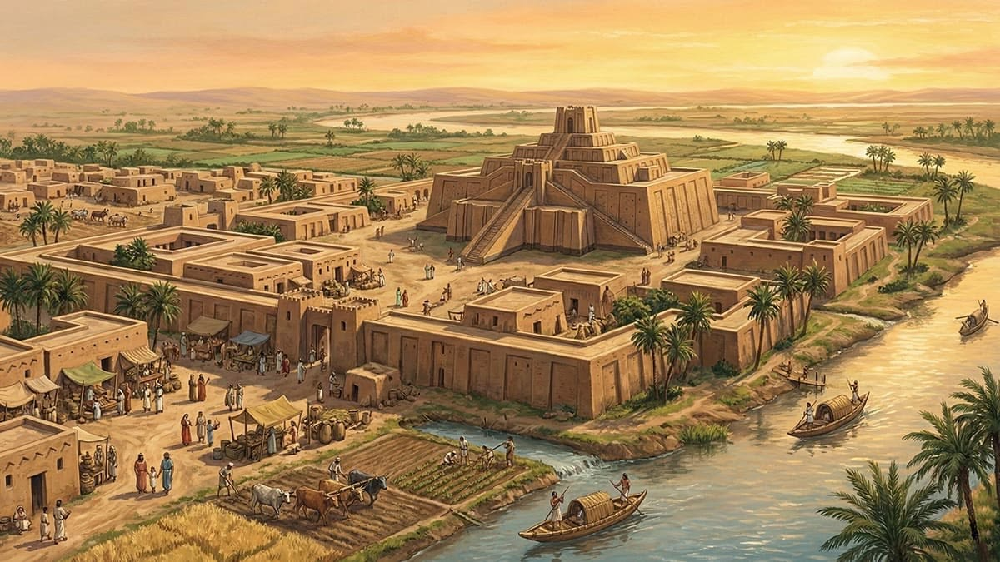

อารยธรรมเมโสโปเตเมีย

ความเป็นมา
เมโสโปเตเมียเป็นดินแดนที่ตั้งอยู่ระหว่างแม่น้ำไทกริส และแม่น้ำยูเฟรทีส จึงเหมาะต่อการเพาะปลูกและการตั้งถิ่นฐาน
ความสำคัญ
ชาวเมโสโปเตเมียมีการสร้างระบบชลประทาน พัฒนาอักษรคูนิฟอร์ม และมีกฎหมายที่สำคัญ เช่น ประมวลกฎหมายฮัมมูราบี